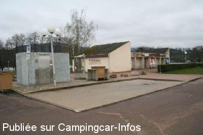
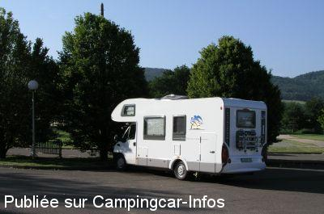

ASN = Aire de services avec stationnement nuit possible de :
AUTUN
(N° 434)
Accès/adresse :
Route de Châlons, N80
71400 AUTUN
71400 AUTUN
Latitude : (Nord) 46.95555° Décimaux ou 46° 57′ 19′′
Longitude : (Est) 4.31651° Décimaux ou 4° 18′ 59′′
Tarif : 2015
Stationnement gratuit
Services : 3,50 €
Jetons à la base nautique, Mc DO, et la station service proche
Type de borne : Plateforme
Services :


Autres informations :
Ouvert toute l'année
17 emplacements
Grille de vidanges eaux usées, à soulever pour vidange WC à coté du robinet.
Tél Office du Tourisme :+33(0)385 868 000
http://www.autun-tourisme.com/
Au bord du plan d'eau près de la base nautique

Le 19/05/2008 par Fanfan

Le 28/03/2005 par holzi
de
Eve
le 11/07/2015 :
Cette aire est dans un environnement bruyant, après avoir utilisé les services si besoin, allez au parking de délestage fiche 23390 situé au bord du lac, calme et
plus proche de la ville, en plus il possède quelques places ombragées.
Cette aire est dans un environnement bruyant, après avoir utilisé les services si besoin, allez au parking de délestage fiche 23390 situé au bord du lac, calme et
plus proche de la ville, en plus il possède quelques places ombragées.
de
François
le 26/03/2015 :
Bonjour,
De passage ce jour, aire bruyante jusqu'à 22h puis nuit calme. La vielle ville à 20mn à pieds, ne ratez pas la cathédrale
Bonjour,
De passage ce jour, aire bruyante jusqu'à 22h puis nuit calme. La vielle ville à 20mn à pieds, ne ratez pas la cathédrale
de
jcf68500
le 10/08/2014 :
De passage le 07/08/14, cette aire située prés d'un plan d'eau remarquable souffre de plusieurs défauts, terrain en pente, présence de voitures, places étroites, loin de la ville et des commerces, etc...en un mot: NULLE, alors que l'endroit et la place disponible permettraient une belle réalisation.
Résultat, nous n'y avons fait qu'un bref passage avant d'aller à plus loin.
De passage le 07/08/14, cette aire située prés d'un plan d'eau remarquable souffre de plusieurs défauts, terrain en pente, présence de voitures, places étroites, loin de la ville et des commerces, etc...en un mot: NULLE, alors que l'endroit et la place disponible permettraient une belle réalisation.
Résultat, nous n'y avons fait qu'un bref passage avant d'aller à plus loin.
de
BALIBALO
le 08/07/2013 :
maintenan il y a un gonfleur payant avec un jeton coupleur avec un min netoyeur haute pression
maintenan il y a un gonfleur payant avec un jeton coupleur avec un min netoyeur haute pression
de
Michel
le 24/09/2012 :
Le parking de délestage est certainement, bien plus calme qe celui avec borne.
Jolie vue sur le le plan d'eau.
Nous avons passé une bonne nuit le 19/09/2012
Prendre direction cimetière.
Le parking de délestage est certainement, bien plus calme qe celui avec borne.
Jolie vue sur le le plan d'eau.
Nous avons passé une bonne nuit le 19/09/2012
Prendre direction cimetière.
de
cui
le 01/08/2012 :
De passage fin juillet 2012.
Pour visiter la ville et bien dormir , allez directement au parking de délestage situé rue de la maladière.
Les CC s'entassent à tort sur l'aire principale bien bruyante et saturée.
De passage fin juillet 2012.
Pour visiter la ville et bien dormir , allez directement au parking de délestage situé rue de la maladière.
Les CC s'entassent à tort sur l'aire principale bien bruyante et saturée.
de
clement
le 08/03/2012 :
Il existe maintenant un parking de délestage indiqué par panneaux lorsque celui-ci est complet, il se trouve rue de la maladière de l'autre côté du lac et est bien plus au calme, en plus il est plus proche du centre ville.
Il existe maintenant un parking de délestage indiqué par panneaux lorsque celui-ci est complet, il se trouve rue de la maladière de l'autre côté du lac et est bien plus au calme, en plus il est plus proche du centre ville.
de
Alain et Gilles
le 09/10/2011 :
Un peu décevante cette aire : bruit du trafic routier important à proximité et surtout le terrain est en pente ; loin des commerces et du centre ville. Dommage car le cadre est agréable.
Un peu décevante cette aire : bruit du trafic routier important à proximité et surtout le terrain est en pente ; loin des commerces et du centre ville. Dommage car le cadre est agréable.
de
Ian G
le 20/07/2010 :
Pleasant aire - quite busy (visited 12 July.) Borne was en panne, but there is now a free WC. Quite noisy from early morning - places by the main road obviously noisier, but also easier to get level on. Might not have been so noisy if the bottle bank hadn't been emptied at 06.20!!
Pleasant aire - quite busy (visited 12 July.) Borne was en panne, but there is now a free WC. Quite noisy from early morning - places by the main road obviously noisier, but also easier to get level on. Might not have been so noisy if the bottle bank hadn't been emptied at 06.20!!
de
jlch 57
le 14/10/2009 :
Aire sympa (elles ne sont pas si nombreuses), en bordure de route, donc un peu bruyante. Nous y avons passé une nuit, borne pour les services, beaucoup de monde et d'étrangers bien que hors période. Merçi à la municipalité de nous réserver cette aire.
Aire sympa (elles ne sont pas si nombreuses), en bordure de route, donc un peu bruyante. Nous y avons passé une nuit, borne pour les services, beaucoup de monde et d'étrangers bien que hors période. Merçi à la municipalité de nous réserver cette aire.
de
Fanfan
le 19/05/2008 :
Aire sympa, nous y avons dormi le 10 avril, sans aucune difficulté (pas de bruit). Mc-Do en face pour la Wi-fi. Légèrement en pente mais avec les cales le problème est résolu. Quant à l'eau, pas de souci non plus quand on a les bons embouts. Il y a un WC public.
Aire sympa, nous y avons dormi le 10 avril, sans aucune difficulté (pas de bruit). Mc-Do en face pour la Wi-fi. Légèrement en pente mais avec les cales le problème est résolu. Quant à l'eau, pas de souci non plus quand on a les bons embouts. Il y a un WC public.